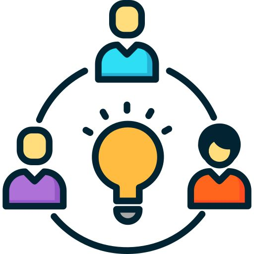

📂Semana 2
🎯 Objetivo
- Para diseñar y construir circuitos electrónicos básicos, programar y aplicar sus habilidades para resolver problemas del mundo real, para fomentar la creatividad, curiosidad y habilidades prácticas en STEM, inspirando a los estudiantes a explorar y desarrollar su potencial en el campo de la tecnología y la educación, proporcionar a los estudiantes conocimientos prácticos y teóricos sobre cómo usar la plataforma Arduino IDE, la plataforma Tinkercad y mBlock, la placa Arduino Uno.
👩🏻💻 Desarrollo de competencias
- Competencia en pensamiento lógico y computacional: Comprensión y uso de estructuras de datos como matrices tridimensionales.
Aplicación de lógica algorítmica para programar secuencias de iluminación. - Competencia en tecnología y programación: Uso de Arduino, Tinkercad o mBlock para controlar LEDs.
Desarrollo de habilidades en codificación estructurada y visual. - Competencia en diseño y construcción: Diseño estructural del cubo LED (medición, simetría, distribución). Aplicación de técnicas de soldadura, manejo de herramientas y componentes electrónicos.
- Competencia en trabajo colaborativo: Coordinación de tareas en equipo para la construcción, conexión y programación del cubo. Comunicación efectiva y toma de decisiones conjunta.
Resolución de problemas: los estudiantes aprenderán a diseñar y construir robots y circuitos electrónicos, y aplicar sus habilidades para resolver problemas del mundo real. - Habilidades de programación: los estudiantes desarrollarán habilidades en la programación de robots y circuitos electrónicos, utilizando diferentes lenguajes de programación y herramientas.
🔍Requisitos previos:
Los estudiantes que deseen abordar el proyecto de Shields Educativos deben tener conocimientos previos en los siguientes conceptos:
- Sistemas informáticos y tecnología de la información: es importante que los estudiantes tengan conocimientos básicos en sistemas informáticos, ya que trabajarán con tecnología y herramientas informáticas para el diseño y programación de los Shields Educativos.
- Herramientas en línea como Tinkercad y mBlock: estas son necesarias para el diseño y simulación de los Shields Educativos, por lo que es importante que los estudiantes tengan experiencia previa en su uso.
- Matemáticas aplicadas a la electrónica: los estudiantes deben tener conocimientos básicos de electrónica y ser capaces de calcular valores eléctricos.
- Programación: es importante que los estudiantes tengan conocimientos previos en lógica de programación, incluyendo variables, tipos de datos, bucles, estructuras de control, funciones y estructuras de datos.
- Electrónica: los estudiantes deben tener conocimientos básicos de electrónica, incluyendo componentes electrónicos, herramientas electrónicas y soldadura.
El conocimiento previo en estas áreas facilitará la participación activa de los estudiantes en el proyecto, permitiéndoles vivir una experiencia más completa y enriquecedora. No obstante, es importante destacar que dichos conocimientos no son indispensables, ya que los estudiantes pueden desarrollar estas habilidades progresivamente a lo largo del proceso, mediante la práctica y la experimentación.
🌍Contexto

Este proyecto es un curso de programación y electrónica diseñado para estudiantes del séptimo ciclo de la carrera de Pedagogía de las Ciencias Experimentales Informáticas de la Universidad Nacional de Loja.
En el proceso de construcción, se abordan elementos esenciales del diseño estructural y la soldadura de componentes electrónicos, fomentando habilidades motrices finas, planificación espacial y dominio técnico. Asimismo, la dinámica grupal del proyecto impulsa el trabajo colaborativo, permitiendo que los estudiantes se organicen, comuniquen y resuelvan tareas en conjunto, desarrollando también su capacidad para tomar decisiones y resolver problemas.
Por otro lado, el enfoque progresivo del proyecto posibilita que los estudiantes adquieran habilidades de programación de forma gradual, utilizando tanto lenguajes visuales (como en mBlock) como estructurados (como en Arduino IDE), adaptándose al nivel de cada estudiante.